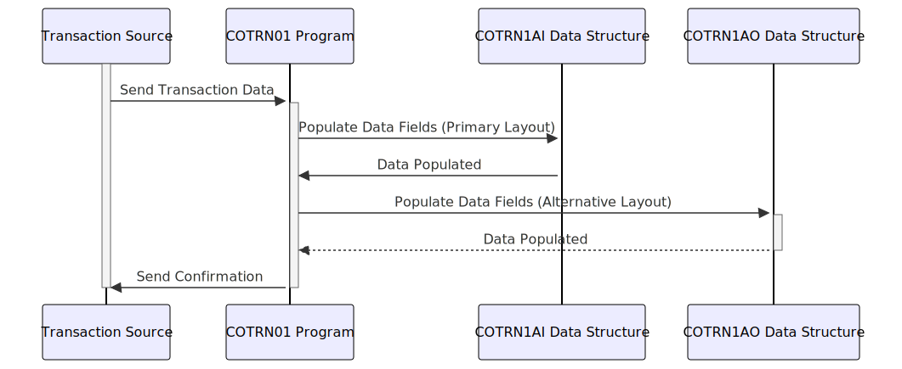

Gerado em: 1º de outubro de 2024
Título do Documento: Especificação da Estrutura de Dados de Transações com Cartão de Crédito
Descrição Resumida:
Este documento detalha a estrutura dos registros de transações com cartão de crédito em nosso sistema. Ele atua como um modelo para capturar, armazenar e processar cada transação com cartão de crédito, garantindo consistência e precisão.
Histórias de Usuário:
Como analista financeiro, preciso de uma maneira padronizada de acessar e analisar dados de transações com cartão de crédito para rastrear padrões de gastos, identificar possíveis fraudes e gerar relatórios para insights de negócios.
Épico Relacionado:
4 - Processamento de Transações
Requisitos Funcionais:
- O sistema deve capturar todos os detalhes essenciais de uma transação com cartão de crédito, incluindo:
- ID de Transação Único (TRNIDINI)
- Número do Cartão de Crédito (CARDNUMI)
- Código do Tipo de Transação (TTYPCDI): Compra, reembolso, adiantamento em dinheiro, etc.
- Origem da Transação (TRNSRCI): Online, terminal POS, ATM, etc.
- Descrição da Transação (TDESCI)
- Valor da Transação (TRNAMTI)
- ID do Comerciante (MIDI)
- Nome do Comerciante (MNAMEI)
- Timestamps: Origem (TORIGDTI), Processamento (TPROCDTI)
- Mensagem de Erro (ERRMSGI): Se ocorrer algum problema durante o processamento
- O sistema deve validar os tipos de dados e os comprimentos dos campos para garantir a integridade dos dados.
- O sistema deve suportar dois layouts de dados:
COTRN1AI: Layout primário usando formatos de caractere e decimal compactado.COTRN1AO: Layout alternativo com formatação de caractere diferente para necessidades específicas de processamento.
Requisitos Não Funcionais:
- Desempenho: O processamento de registros de transações deve ser rápido e eficiente para lidar com altos volumes de transações.
- Confiabilidade: O sistema deve registrar e armazenar com precisão todos os dados de transações sem perda ou corrupção.
- Manutenibilidade: A estrutura de dados deve ser facilmente compreensível e modificável para aprimoramentos futuros.
- Segurança: Os dados confidenciais da transação devem ser protegidos contra acesso e modificação não autorizados.
Critérios de Aceitação:
- Todos os campos de dados definidos são capturados com precisão e completamente para cada transação.
- As validações de tipo de dados e comprimento de campo são implementadas e funcionam corretamente.
- Os layouts
COTRN1AI e COTRN1AO são suportados e podem ser processados pelo sistema.
- O sistema lida com altos volumes de transações sem degradação de desempenho.
- As medidas de segurança estão em vigor para proteger dados confidenciais de transações.
Melhorias de Código:
- Implementar criptografia de dados para campos confidenciais, como números de cartão de crédito, para aumentar a segurança.
- Adicionar técnicas de mascaramento de dados para proteger dados confidenciais durante a exibição ou registro.
- Implementar mecanismos de registro para rastrear a criação, acesso e modificações de registros de transações para fins de auditoria.
- Considere o uso de um dicionário de dados para centralizar as definições dos elementos de dados e garantir a consistência em todo o aplicativo.
Melhorias de Segurança:
- Implementar mecanismos de controle de acesso para restringir o acesso aos dados da transação com base nas funções e permissões do usuário.
- Auditar o sistema regularmente para garantir a conformidade com as políticas de segurança e identificar possíveis vulnerabilidades.
- Implementar políticas de retenção de dados para arquivar ou excluir com segurança os dados da transação de acordo com os requisitos regulamentares.
Diagrama Conceitual:

–Made by “Smart Engineering” (by Compass.UOL)–